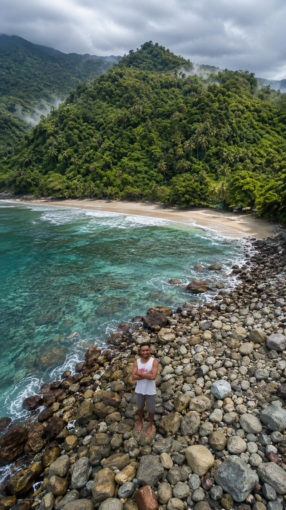

02
Pembinaan Jemaat
Membangun pertumbuhan rohani jemaat melalui persekutuan, pembinaan, dan pendalaman iman.
SelengkapnyaBersama melayani, bertumbuh dalam Kristus, dan menjadi berkat bagi gereja serta masyarakat di Tanah Papua.
Scroll untuk menjelajah
GKII Wilayah IV Papua Pegunungan hadir sebagai bagian dari pelayanan Gereja Kemah Injil Indonesia untuk membangun iman, memperkuat persekutuan, dan menghadirkan kasih Kristus bagi masyarakat di Tanah Papua.
Papua Pegunungan
Gereja Kemah Injil Indonesia (GKII) Wilayah IV Papua Pegunungan merupakan bagian dari keluarga besar GKII yang menjalankan panggilan pelayanan melalui pemberitaan Injil, pembinaan jemaat, pendidikan iman, serta pelayanan sosial.
Dengan semangat kebersamaan, pelayanan diarahkan untuk membangun gereja yang bertumbuh, mandiri, dan mampu menjadi berkat bagi masyarakat di Papua Pegunungan.
Melayani dengan kasih dan ketulusan.
Membangun kebersamaan dalam Kristus.
Bertumbuh dalam iman dan pelayanan.
Membangun kehidupan gereja yang berpusat pada Kristus, bertumbuh dalam iman, serta menghadirkan kasih dan pengharapan bagi sesama.
Menjalankan pelayanan melalui pemberitaan Injil, pemuridan, pembinaan jemaat, pengembangan generasi muda, serta pelayanan sosial dan kemasyarakatan.
Menyampaikan kabar baik dan membangun kehidupan yang berpusat pada Kristus.
Mendorong pertumbuhan iman melalui pembinaan dan persekutuan jemaat.
Membekali generasi muda untuk menjadi pribadi yang aktif dalam pelayanan.
Menjadi berkat melalui kepedulian, kasih, dan pelayanan kepada masyarakat.
“Melayani bukan tentang seberapa besar yang kita lakukan, tetapi seberapa besar kasih yang kita berikan dalam setiap pelayanan.”
GKII Wilayah IV Papua PegununganPelayanan GKII Wilayah IV Papua Pegunungan diarahkan untuk membangun iman, memperkuat persekutuan, mengembangkan generasi, dan menjadi berkat bagi masyarakat.

Membawa kabar baik dan menghadirkan kasih Kristus melalui kehidupan dan pelayanan gereja.
Membangun pertumbuhan rohani jemaat melalui persekutuan, pembinaan, dan pendalaman iman.
SelengkapnyaMembentuk generasi sejak dini melalui pendidikan iman, kreativitas, dan pembinaan karakter Kristiani.
SelengkapnyaMendorong pemuda untuk bertumbuh dalam iman, memiliki karakter Kristus, dan aktif dalam pelayanan gereja.
SelengkapnyaMenghadirkan kepedulian dan kasih melalui pelayanan sosial serta perhatian terhadap kebutuhan masyarakat.
SelengkapnyaMendukung peningkatan kualitas sumber daya manusia melalui pendidikan dan pengembangan potensi generasi.
SelengkapnyaMendorong gereja-gereja untuk bertumbuh, membangun pelayanan yang sehat, dan memperkuat persekutuan.
SelengkapnyaGKII Wilayah IV Papua Pegunungan menjadi ruang persekutuan, pertumbuhan iman, pelayanan dan penginjilan bagi jemaat di tanah Papua Pegunungan.
Gereja bukan hanya tempat untuk beribadah, tetapi juga menjadi tempat umat bertumbuh, membangun persekutuan, mengembangkan potensi, dan menghadirkan kasih Kristus di tengah masyarakat.
Bersama membangun kehidupan gereja yang sehat, kuat dalam persekutuan, dan aktif dalam pelayanan.
Menjadi rumah rohani bagi umat untuk beribadah, bertumbuh dan membangun persekutuan.
Lihat PelayananMembangun hubungan yang erat antarjemaat dalam kasih, kebersamaan dan kepedulian.
Lihat KegiatanMembawa kabar baik dan menjangkau lebih banyak jiwa melalui pelayanan pemberitaan Injil.
Jelajahi PelayananMembentuk anak, remaja dan pemuda menjadi generasi yang beriman dan memiliki karakter Kristus.
Pelayanan GenerasiDokumentasi kegiatan menjadi bagian dari perjalanan pelayanan GKII Wilayah IV Papua Pegunungan.

Menjadi momentum untuk memperkuat persekutuan, mengevaluasi pelayanan dan mendorong gereja untuk terus bertumbuh serta memberitakan Injil.
Lihat Dokumentasi IBADAH
IBADAH
Bersama membangun iman melalui doa, pujian, penyembahan dan pemberitaan Firman Tuhan.
Selengkapnya KONFERENSI
KONFERENSI
Ruang bersama untuk mengevaluasi pelayanan, menyusun arah pelayanan dan memperkuat kesatuan.
Selengkapnya PELAYANAN
PELAYANAN
Menghadirkan kasih Kristus melalui kepedulian terhadap sesama dan masyarakat.
Selengkapnya PEMUDA
PEMUDA
Mendorong pemuda untuk aktif bertumbuh, berkarya dan mengambil bagian dalam pelayanan.
Selengkapnya DOA
DOA
Menguatkan kehidupan rohani melalui doa, persekutuan dan pembinaan iman.
Selengkapnya MISI
MISI
Membawa kabar baik kepada masyarakat melalui pelayanan penginjilan dan penjangkauan.
SelengkapnyaSetiap foto menyimpan cerita tentang iman, persekutuan, pelayanan dan perjalanan GKII Wilayah IV Papua Pegunungan.

Momen persekutuan dan pelayanan GKII di Papua Pegunungan.


Jika Anda memiliki pertanyaan, ingin mengirim informasi, dokumentasi kegiatan, atau ingin berkomunikasi dengan Biro Media Digital GKII Wilayah IV Papua Pegunungan, silakan hubungi kami melalui WhatsApp.
Kirim pesan langsung kepada admin Biro Media Digital GKII Wilayah IV Papua Pegunungan.
0822 9260 5436